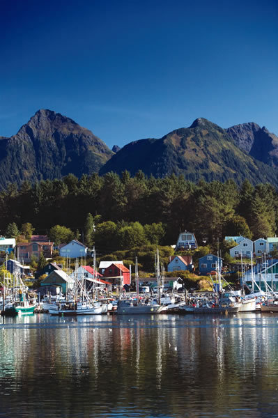

OK, so it’s expensive and remote. But it’s still one of the most beautiful places on Earth. Sitka is a coastal town in southeast Alaska with a mild maritime climate that will dispel any notions you may have about Alaska being completely frigid and snowy. In fact, the average winter low in Sitka is 30 degrees, much warmer than many continental towns on our list. And the average summer high is just 61 degrees, perfect for many outdoor activities such as hiking, kayaking and whale watching. The scenery is spectacular, with spruce forests, snow-capped mountains and island-dappled waters as far as you can see.
As long as you’re dreaming of the best places to live, you might as well dream big.
Do you live in Sitka? Have you visited? Please post your comments below.
Population: 8,986
County: Sitka Borough
Climate: rainy and mild
Cost of living index: 138
Median home price: $335,200
Alternative energy: no net metering; no local incentives
Don’t miss: Sitka National Historical Park, where you can learn about southeast Alaska’s native cultures and seaside forests.
|
 DANITA DELIMONT Boats fill the tranquil harbor of Sitka. |
|
|